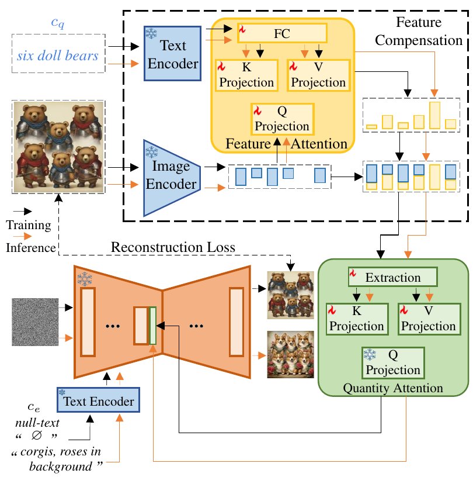

Artificial Intelligence Generated Content (AIGC) is a hot research direction in the field of artificial intelligence. Our team is dedicated to exploring the applications of AIGC technology in computer vision and graphics, and we are currently focusing on the following research areas: To address this challenge, this project introduces an innovative framework that integrates unsupervised domain adaptation with active learning, aiming to improve model robustness under limited annotation budgets. The proposed approach enhances data efficiency by selectively identifying the most valuable samples from diverse data sources, reducing the need for extensive manual labeling. A key feature of this framework is the use of advanced distribution alignment techniques, which minimize domain discrepancies by harmonizing data characteristics across different environments. Furthermore, it incorporates intelligent sample selection mechanisms that consider both uncertainty and representativeness, ensuring that each labeled sample contributes meaningfully to model improvement.
Generating 3D models from single-view 2D images. Traditional 3D reconstruction usually requires multi-view 2D images as input, while our research aims to explore how to generate high-quality 3D models using only a single 2D image. This technology can greatly lower the barriers to 3D content creation and has broad application prospects in fields such as VR/AR, autonomous driving, and game design. We utilize deep learning techniques to design suitable network architectures and loss functions, enabling the model to learn the 3D attributes of objects, such as shape and texture, from a single image, thereby achieving 3D model reconstruction.
Generating multi-view 2D images from single-view 2D images. Similar to 3D reconstruction, we are also investigating how to generate 2D images of an object from other viewpoints starting from a single 2D image. This technology can be used for tasks such as image editing and data augmentation. Based on the theory of diffusion models, we learn the multi-view representations of objects from large-scale data, enabling the model to generate realistic and consistent multi-view images.
Relighting of human portraits. Given a portrait photo, how can we automatically adjust its lighting to present the effect under another lighting environment while maintaining the consistency of the person's features? This has extensive demand in fields such as portrait photography and film post-production. We employ deep learning techniques to decompose the lighting and reflectance in the photo and then resynthesize the image under the target lighting to achieve a realistic relighting effect.
Distillation and acceleration based on diffusion models. Diffusion models are a type of generative model that has emerged in recent years, demonstrating impressive performance in image generation tasks. However, the iterative sampling process of diffusion models is computationally intensive, making them less practical for real-time applications. Our research focuses on distilling the knowledge from diffusion models into more lightweight networks and optimizing the sampling algorithms to significantly reduce inference time while maintaining generation quality. We explore techniques such as knowledge distillation, model pruning, and adaptive sampling strategies to make diffusion models more efficient and deployable in resource-constrained environments.
Project Example
On Learning Quantity Perception for Multi-object Image Editing (Accepted in CVPR)

Multi-object image editing enables flexible modification of various concepts in images while maintaining overall visual coherence. These techniques are essential for applications such as image generation, medical imaging, and augmented reality.
Despite its importance, editing multi-object images remains a challenging task due to existing methods struggling to consider each object both individually and part of the whole image. This often results in inconsistent quantity perception during editing, leading to visual distortions, blurring, and disruptions in scene semantics and logical structure, as well as reduced editability.
Traditional techniques typically focus on enhancing single-object editing by fine-tuning methods such as Stable Diffusion (SD) locally, but fail to ensure consistent quantity perception across multiple objects. Recent approaches leveraging Large Language Models (LLMs) for text-image alignment have focused on maintaining consistency in the global information of the whole image. While these methods ensure quantity consistency visually, they often encounter aliasing of object attributes. This oversight makes the effective extraction of object attributes difficult during editing. Auxiliary tools, such as masks, are commonly used to extract object attributes. While effective, this approach fails to capture global image information of the whole image and requires a one-to-one association between auxiliary tools and each object to preserve quantity consistency. This significantly increases training costs, reduces user convenience, and often demands manual adjustments. Therefore, there is an urgent need for a solution that extracts object attributes from the whole image, ensuring the distinction and separability of these attributes while simultaneously perceiving global information of the whole image. Such a solution would eliminate the need for consistent auxiliary tool quantities and address limitations in the multi-object image editing.
To address this technical challenge, we propose the MoEdit pipeline, an auxiliary-free solution designed to enhance the editing quality and editability of multi-object images by ensuring consistent quantity perception between inputs and outputs. Our approach comprises two key modules:
(1) Feature Compensation (FeCom) module: A feature attention is employed to enable interaction between text prompts, which contain quantity and object information, and the inferior image features extracted by the image encoder of CLIP. This process compensates for inferior features to minimize the in-between interlacing, and ultimately extracts object attributes. The enhanced attribute distinction of each object also provides a foundation for the QTTN module to achieve auxiliary-free quantity perception.
(2) Quantity Attention (QTTN) module: Without relying on any auxiliary tools, this module perceives the information of each object both individually and part of the whole image from the image features enhanced by FeCom. The perceived information is then injected into specific blocks of U-Net, enabling the model to acquire a clear and consistent quantity perception. The visual comparisons of our MoEdit with the latest method TurboEdi.